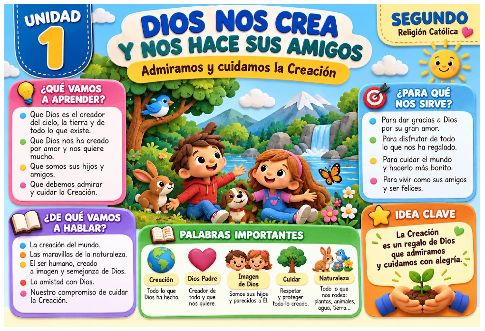

Todos los contenidos y actividades están reunidos en este PDF.
Abrir PDF de la unidad →⭐ RETO DE LA UNIDAD
Esta semana elegimos una acción concreta para cuidar nuestro mundo: una planta, un animal, el agua, la naturaleza o a otra persona.